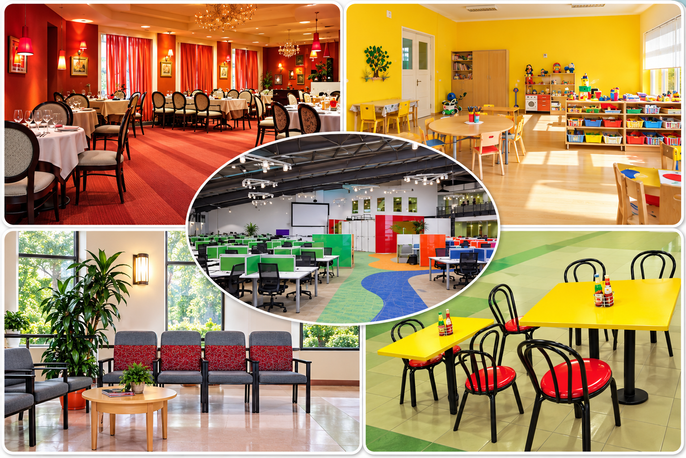
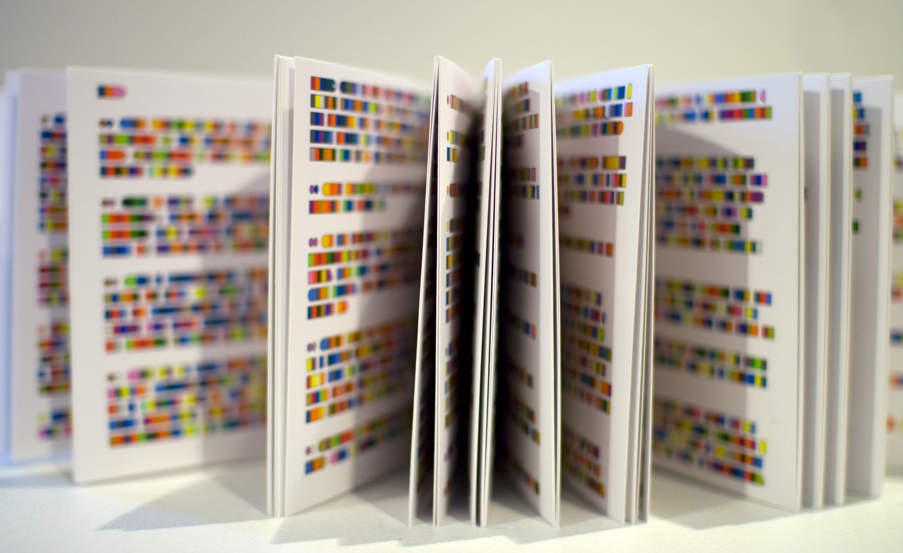

Wordlist — colour and design
These words and phrases will help you describe colour and design later in the day.
| word / phrase | meaning | example |
|---|---|---|
| vibrant (adj.) | bright and full of energy; strikingly colourful | The vibrant reds and oranges made the market feel lively. |
| muted (adj.) | (of a colour) soft, pale, not bright or intense | The office used muted greys and blues to feel calm and professional. |
| palette (n.) | the range of colours used in a design, room, or artwork | The designer chose a warm palette of reds and golds for the restaurant. |
| hue (n.) | a colour, or a particular shade of a colour | Even a slightly different hue of blue can completely change the mood of a room. |
| clash (v.) | (of colours) to look unpleasant or awkward when placed together | Bright orange and pink can clash if they aren't balanced carefully. |
| complement (v.) | to go well with something else; to enhance it | Soft yellow walls complement natural wood furniture nicely. |
| evoke (v.) | to bring a particular feeling, memory, or image to mind | Cool blues and greens tend to evoke a sense of calm. |
| monochrome (adj.) | using only one colour, or different shades of a single colour | The hotel lobby had a striking monochrome design of black, white, and grey. |
Complete the sentences with words from the table.
1. The stadium was decorated in the colours of the national flag.
2. She prefers a colour scheme rather than anything too bold.
3. The artist's was made up almost entirely of blues and greens.
4. It's surprising how much difference one of red can make compared to another.
5. I think the curtains actually with the carpet.
6. A light grey sofa would the dark wooden floor well.
7. Warm lighting can a cosy, relaxed feeling in a small café.
8. The photography exhibition was entirely , using only black and white.
Colour in design
Look closely at these five real interiors — a restaurant, a children's playroom, an office, a waiting room, and a café.

Now write a mini essay of at least 100 words answering these questions:
1. How do the colours and design make you feel? (Think about patterns, layout, etc.)
2. How appropriate do you think they are for the function of each place? (Point at a specific place directly as an example.)
Now discuss these questions out loud.
Useful words: vibrant · muted · palette · hue · clash · complement · evoke
Useful phrases:
- "The first thing that strikes me about this place is..."
- "It gives the space a real sense of..."
- "I feel like the colours here really complement each other because..."
- "To be honest, I think the colours clash a little with..."
- "It creates quite a calming/energising atmosphere, which suits..."
- "If it were up to me, I'd probably choose..."
Useful phrases:
- "I've always found it tricky to tell... apart."
- "For some reason, I kept mixing up... and..."
- "It's probably because those two shades are so similar."
- "Honestly, once I saw them side by side, it made much more sense."
Article — Colour and Language
A short, easier article than today's main reading test. Read it carefully.

Colour and Language
Most people assume that everyone sees the rainbow in the same way. In fact, the number of "basic" colour words a language has varies enormously. English has eleven — black, white, red, green, yellow, blue, brown, purple, pink, orange, and grey — but some languages get by with only two or three, usually words that roughly mean "light/warm" and "dark/cool."
One of the most striking examples is Russian, which has no single word for "blue." Instead, Russian speakers use goluboy for light blue and siniy for dark blue, and treat them as two completely separate colours, in the same way that English speakers treat pink and red as separate. Studies have shown that Russian speakers are measurably faster at telling light and dark blues apart than English speakers are, simply because their language forces them to make that distinction every time they name a colour.
At the other end of the scale, some languages traditionally used a single word to cover both blue and green — a pattern linguists call "grue." Older Welsh, Vietnamese, and several Japanese colour terms historically worked this way, and some still do to an extent, even though modern usage has borrowed separate words for blue and green from other languages.
Why does this happen? Colour itself is a continuous spectrum with no natural boundaries — nature doesn't put gaps between "green" and "blue." Every language has to decide, somewhat arbitrarily, where to draw the lines, and once a culture settles on a set of colour words, those words shape how quickly and how naturally its speakers notice differences within and across categories.
This matters well beyond linguistics. Designers, marketers, and translators all have to be aware that a colour word which feels perfectly precise in one language may be far vaguer, or entirely absent, in another — a reminder that even something as basic as colour is filtered through the language we use to talk about it.
Complete the summary with words from the box. Use one word for each gap.
boundaries · separate · faster · arbitrarily · eleven · grue
English has basic colour words, but other languages divide colour differently. Russian treats light and dark blue as colours, and Russian speakers can tell them apart than English speakers can. Some languages instead use a single word to cover both blue and green, a pattern known as . This happens because colour has no natural , so every language has to decide where one colour ends and another begins.
Are the statements below TRUE, FALSE, or NOT GIVEN according to the article?
1. Every language has exactly eleven basic colour words.
2. Russian speakers are quicker than English speakers at distinguishing shades of blue.
3. All Japanese speakers today still use a single word for blue and green.
4. Nature provides clear, fixed boundaries between colours.
5. Translators can run into problems because colour words don't always match precisely between languages.
Reading — Learning Color Words
Work through the passage and questions below, just like a real computer-delivered IELTS reading test.
Vocabulary from the reading
These words and phrases come from the "Learning Color Words" passage you just read.
| word / phrase | meaning | example |
|---|---|---|
| repertoire (n.) | the range of skills, words, or things a person can use or do | A two-year-old's vocabulary repertoire grows very quickly. |
| haphazard (adj.) | done without any clear plan or system; random | Her guesses about the cup's colour seemed completely haphazard. |
| hypothesise (v.) | to suggest a possible explanation, to be tested by further research | The team hypothesised that word order was the cause of the problem. |
| incompetence (n.) | a lack of skill or ability to do something correctly | The study focused on children's apparent incompetence with colour words. |
| systematic (adj.) | done according to a fixed, organised plan or method | Chairs share a fairly systematic set of features, unlike colours. |
| cue (n.) | a signal or piece of information that helps someone understand or remember something | Colour words give children very few reliable cues to their meaning. |
| novel (adj.) | new and not seen or experienced before | The children were shown novel objects they had never seen before. |
| narrow down (phr. v.) | to reduce the number of possibilities | Children gradually learn to narrow down which features define a "chair." |
Complete the sentences with words from the table.
1. By the age of three, most children have built up an impressive vocabulary .
2. His approach to choosing colours for the flat seemed fairly , with no real plan.
3. Researchers that word order was the key factor.
4. The report described the students' in basic grammar as surprising.
5. Unlike colour words, most object words follow a pattern that children can learn from.
6. A raised eyebrow can be an important social in conversation.
7. The children were tested on completely objects they had never encountered.
8. It took her a while to her choice to just two paint colours.
Speaking Part 1 — Colours
Answer these Speaking Part 1 questions out loud, just like in the real test.
Useful phrases:
- "I'd have to say my favourite colour is..."
- "If I had to pick just one, it would be..."
- "I've always been drawn to..."
Useful phrases:
- "Actually, yes — you see it everywhere, especially in..."
- "Not particularly, most people here tend to prefer..."
- "It's fairly common, though it depends on the generation."
Useful phrases:
- "More often than not, yes — I find it..."
- "Not as much as I'd like to, to be honest."
- "I tend to save it for special occasions."
Useful phrases:
- "Definitely — as a kid I was obsessed with..."
- "Not really, I've always leaned towards..."
- "My taste has become a lot more muted over the years."
Useful phrases:
- "Right now it's painted a fairly neutral..."
- "If I could redo it, I'd probably go for..."
- "I like keeping it simple, so I stuck with..."
Useful words: evoke · calming · energising
Useful phrases:
- "Definitely — I find that... tends to evoke a sense of..."
- "Bright colours give me a real energy boost."
- "Cooler colours have quite a calming effect on me."
Useful phrases:
- "I've never really been keen on..."
- "It's not that I dislike it exactly, it's just..."
- "It reminds me a bit too much of..."
Useful phrases:
- "There's definitely a stereotype that..."
- "I don't think it's as clear-cut as people assume."
- "It probably has more to do with culture than gender itself."
Useful phrases:
- "I'd probably say..., mainly because of the flag."
- "It's closely linked to..., which is a national symbol."
- "That's an interesting question — I'd say..."
Useful phrases:
- "Absolutely — there's actually research to suggest that..."
- "I'm a little sceptical, to be honest, because..."
- "It probably varies a lot from person to person."
Video — How Humans See Colour
Watch the video, then complete the three parts below.
Part 1 — choose the correct answer.
1. What does the idea of "physical color" suggest?
2. Why does a mixture of red and green light appear yellow to humans?
3. What is the main function of rods in the retina?
4. Why can't humans normally see colors in the dark?
5. Why is having only three types of cones useful for TV manufacturers?
Part 2 — complete the sentences with a word from the box.
retina · frequency · cones · rods · perception
1. The is a thin layer of cells covering the back of the eyeball.
2. The color of light is related to the of its waves.
3. There are three kinds of that roughly correspond to red, green, and blue.
4. are used for seeing in low-light conditions.
5. Physical color is different from human color because it describes color as a physical property of light.
Part 3 — match the vocabulary with the correct definition.
1. frequency
2. perception
3. coexist
4. retina
5. detect
6. activate
7. signal
8. distinct
9. property
10. simulate
Listening Section 1 — Eye for Colour Exhibition
Listen to the recording and answer questions 1–10.
Waiting on you, Alan: the questions below are built from your screenshots, but I still need (1) the actual audio file/track name to embed, and (2) the answer key for all 10 questions — I can't derive correct answers from the images alone. No "Check answers" button yet since there's nothing to check against.
🔊 Audio player goes here once the track is provided.
Questions 1–6
Complete the table below. Write ONE WORD for each answer.
Eye for Colour Exhibition
| Section | Aim | Examples of activities |
|---|---|---|
| 'Seeing colour' | — | view the gallery through a huge |
| 'Colour in culture' | to connect colour and | go to the colour café; learn how a affects sight |
| 'Colour in nature' | to look at the natural world | put on a camouflage suit and pick a suitable ; see through the eyes of a dog or fish |
| 'The room' | to show how colours make us feel | listen to music as the colours and change |
Questions 7 and 8
Choose TWO letters, A–E. Which TWO colours were most popular among visitors?
Questions 9 and 10
Choose TWO letters, A–E. Which TWO reasons did the children give for selecting their favourite colour?
Day 4 complete! 🎉
All 8 tasks done. Come back tomorrow for the next day.